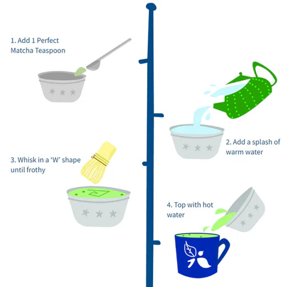

Preparation and Use
Traditional preparation involves whisking matcha powder with hot water using a bamboo whisk either in usucha or koicha style. Today, it’s enjoyed in many forms but especially popular prepared with milk and desserts.
Common Used Tools
| Name | Meaning |
|---|---|
| Chawan | Tea bowl |
| Chasen | Bamboo whisk |
| Chashaku | Bamboo scoop |
